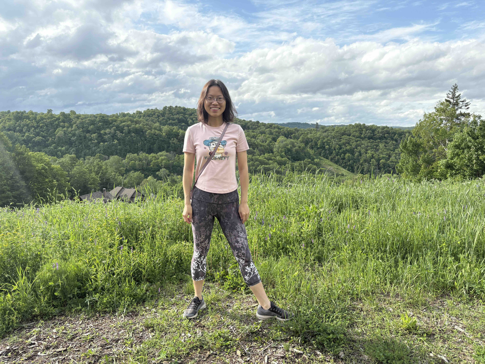

Researcher in AI/ML, Generative Models, Agentic AI, and World Models
Email: sun.sun@nrc-cnrc.gc.ca
Senior research officer, National Research Council (NRC), Canada
Adjunct professor, Cheriton School of Computer Science, University of Waterloo
I mainly work on machine learning, generative AI, and their applications. My recent projects focus on applications in health, video generation, gaming, materials discovery, and drug design.